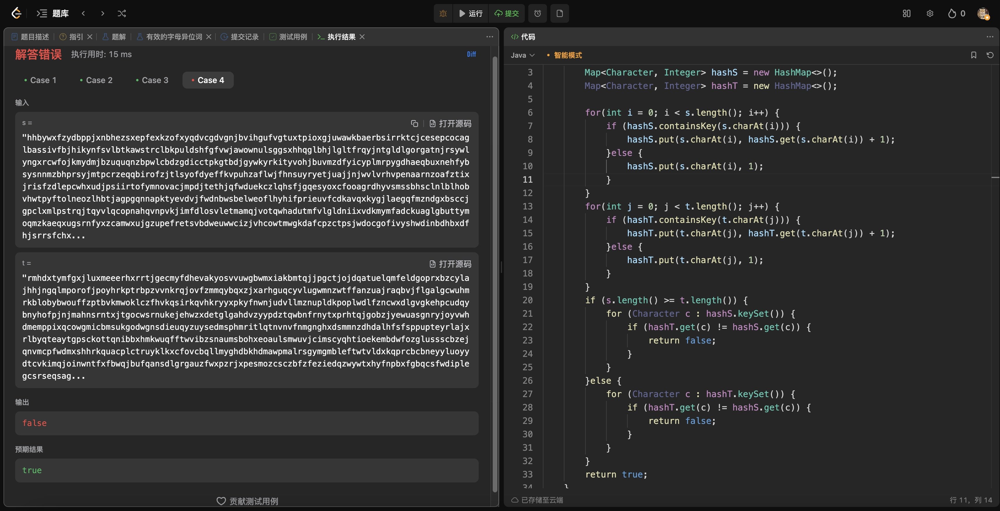
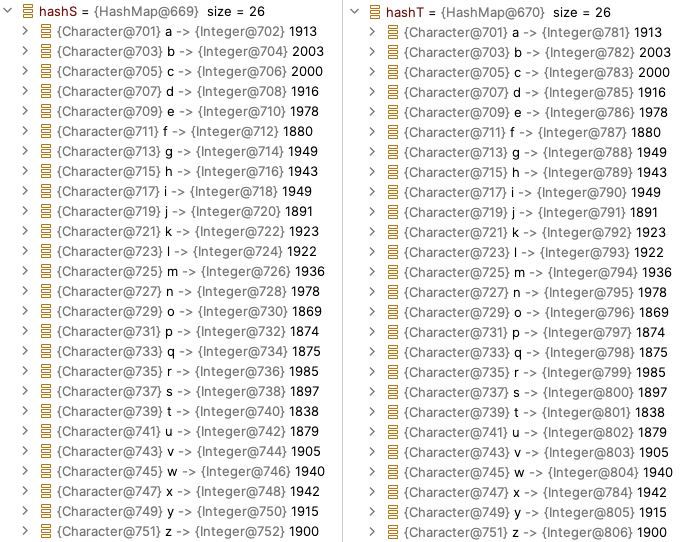
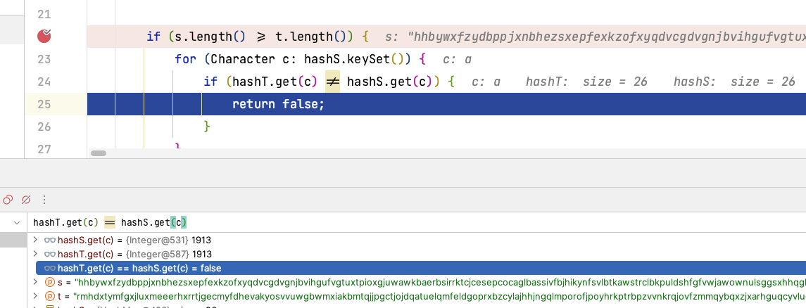
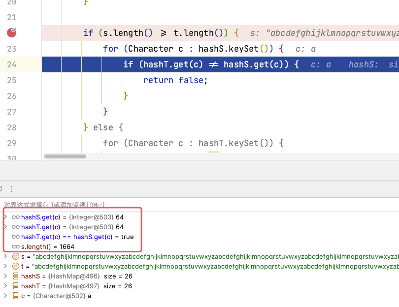
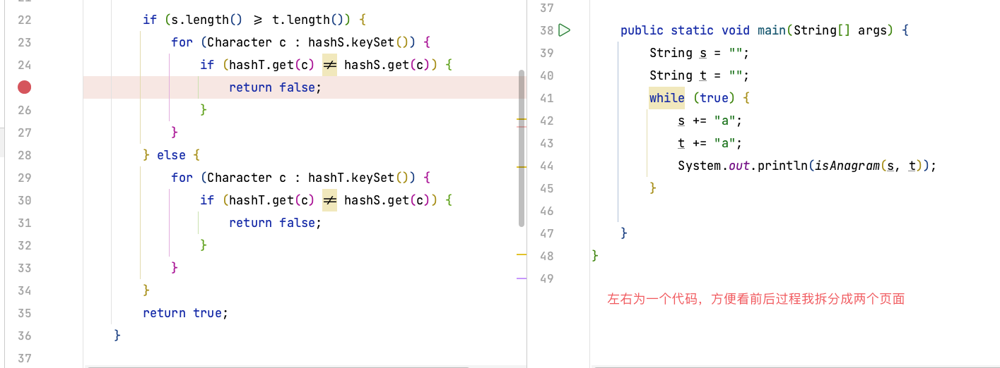
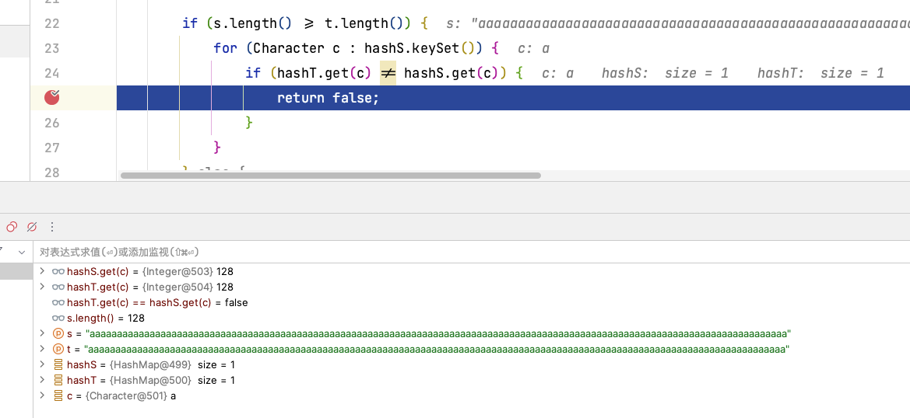

【debug】Java中的map比较
【debug】Java中的map比较
题目链接：242. 有效的字母异位词
事情起因：（由于自己对Java了解不深、有表达错误的请指出，感谢！）
群友发了一张代码截图，觉得自己写的代码并没有错，但是不能通过测试用例。
他的算法我简单说一下，有点麻烦，但算法不是这篇博客的重点。
- 两个Map：
hashS、hashT分别用于存放字符串s和t中字母出现的频率(19行之前)； - 遍历长的字符串对应的Map，假设是
hashS，判断hashS与hashT相同的字母频率是否一样，如果不一样则return false
当时我是在外面，看到了这段代码，理解了他的想法之后好像真的没什么问题。
复现Bug与初步解决
回来之后代码放到idea里面跑了一下，发现这个测试用例长度为50000位，而且每个字母出现的频率是一样的
打上断点继续向下走，看看是哪一步出现了问题。
没想到第一次循环就出错了，hashT.get(c)与hashS.get(c)的值都是1913，但是地址不一样，一个是{Integer@531}，一个是{Integer@587}。看来这里的!=判断的是地址而不是值，使用equal()方法即可，如下：
深层探索
事情并没有真正的解决，既然群友能通过一些测试用例，说明了一些情况使用!=是可以用的，那几个测试用例都是用了很短的字符串，我也看下是什么情况，s="anagram"，t="nagaram"，这是个正确的用例，debug的结果是这样
这可就是玄学了呀，短的数据不会出现问题，而长的会出现。
猜想一：与Map的大小有关
因为长的测试用例有26个键值对（每个字母均出现），而短的只出现了5个字母。我设置测试用例s = t = "abcdefghijklmnopqrstuvwxyz"（以下简称字母表），让每个字母都出现一次。
还是正常的，猜想错误
猜想二：与测试用例的长度有关
接着我就多复制些字母表，出错误的是在50000的长度，我把字母表长度先放到3000多，
1 | |
还是有错误，继续缩短长度，将扩增代码循环6次，减少一次再看看
这次竟然又不出错了，玄学！妥妥的玄学！
我换了种思路，这次不用字母表了，只是用一个变量看看会不会触发这个BUG，如果依然触发，每次长度增加1，那么很快就会得到到底在多长的时候会出现。25行打上断点，被执行前一定会卡住。
 最后做一次验证，是不是Map中，只要有val超过128就会发生地址改变的情况。这次的测试用例使用随机字母
1 | |
很好！当字母w出现了超过128次时候地址发生了变化。128这个数字相信大家一定很敏感，那么这个范围很可能是[-128, 127]。那么则需要看看底层源码是怎么说的，去看看Map.java，搜索127，并没有发现相关说明。
{Integer@***}这里面经常变得数字就是星号部分，那么去Ieteger.java里面看看有什么发现。
结论
结合这两段我悟了，果然有这么个范围，在初始化值的时候，[-128, 127]这个范围的数是在缓存里面，所以当Map中的value小于128时候读取的是缓存中的数，所以他们地址是一样的，也就是hashS.get(c)==hashT.get(c)的原因。当超过这个范围，则会在新的地方存放一个值，尽管hashS.get(c)和hashT.get(c)均为128，但是使用==或!=判断的时候，判断的是地址，得到hashS.get(c)!=hashT.get(c)。
所以一定要写equal()方法进行判断
所以一定要写equal()方法进行判断
所以一定要写equal()方法进行判断
hashS.get(c).equal(hashT.get(c))，这样判断的才是值而不是地址